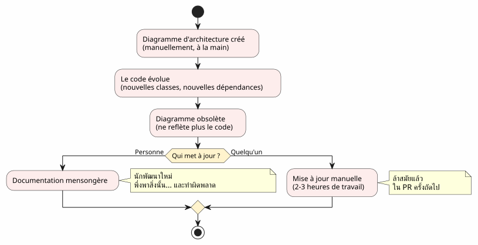
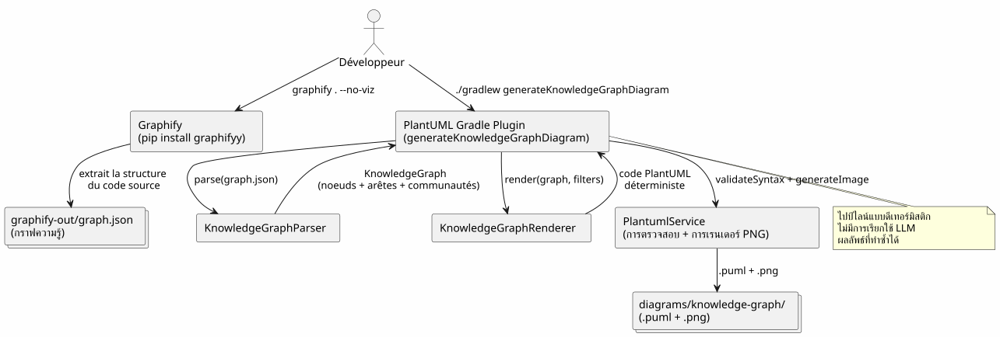
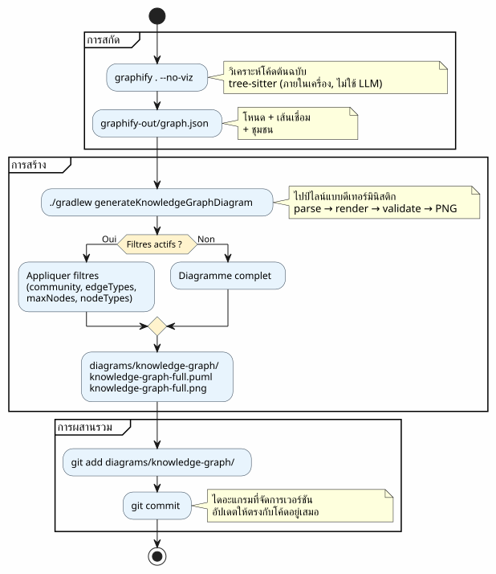
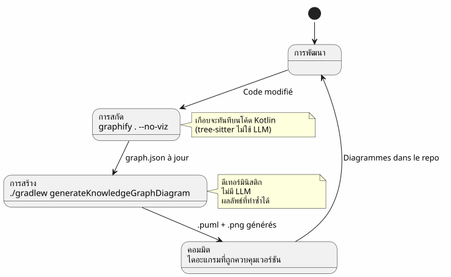
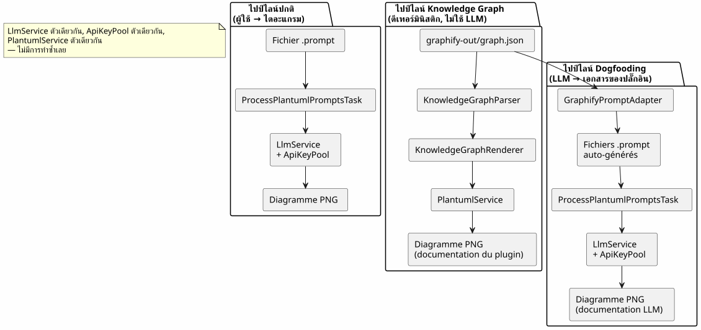
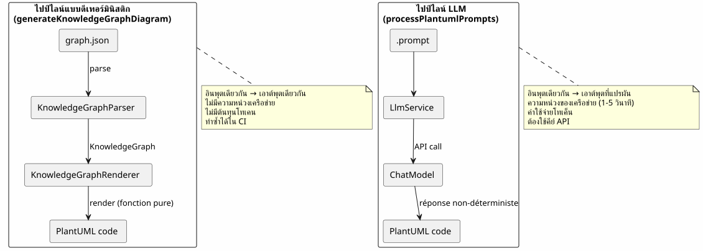
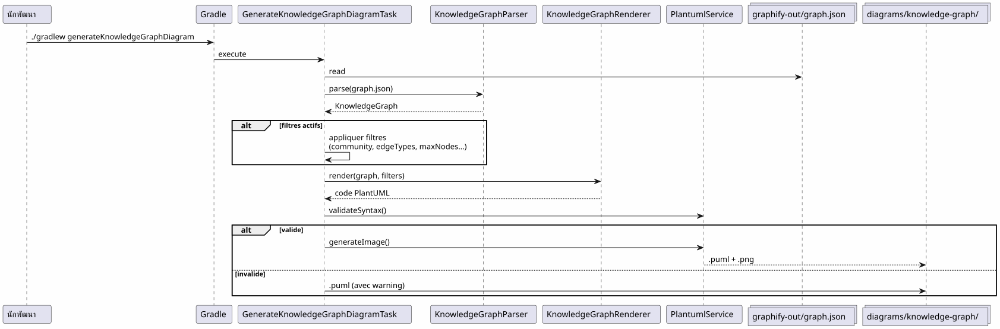
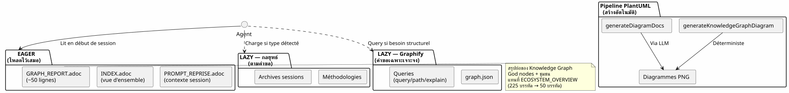
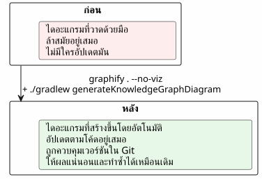

ผสาน Graphify เข้าในเวิร์กโฟลว์ Gradle: จาก Knowledge Graph สู่ไดอะแกรม PlantUML ด้วยคำสั่งเดียว
เผยแพร่เมื่อ 19 April 2026
- ปัญหา: ไดอะแกรมตามหลังโค้ดอยู่เสมอ
- แนวทางแก้ไข: ไปป์ไลน์แบบดีเทอร์มินิสติก Knowledge Graph → PlantUML
- ขั้นตอนที่ 1: ติดตั้ง Graphify และสกัด Knowledge Graph
- ขั้นตอนที่ 2: ปลั๊กอิน Gradle แปลง Knowledge Graph เป็น PlantUML
- ขั้นตอนที่ 3: การใช้งานในชีวิตประจำวัน
- ไปป์ไลน์ทั้งหมดในเวิร์กโฟลว์ Gradle
- Dogfooding: ปลั๊กอินจัดทำเอกสารด้วยตัวเอง
- ทำไมมันจึงเป็นดีเทอร์มินิสติก (และทำไมเรื่องนี้จึงสำคัญ)
- แผนภาพของไปป์ไลน์เอง
- การบูรณาการเข้ากับการกำกับดูแลโครงการ
- การจัดเตรียม: เช็กลิสต์ใน 5 นาที
- ข้อควรระวังและการบรรเทาผลกระทบ
- สิ่งที่เราได้ในที่สุด
- ลิงก์
โค้ดเบสของคุณกำลังเติบโต การพึ่งพากันระหว่างโมดูลมีเพิ่มขึ้นเรื่อย ๆ เอกสารสถาปัตยกรรมกลายเป็นสิ่งที่ล้าสมัยก่อนที่จะถูกเขียนเสียอีก แล้วถ้าบิลด์ Gradle ของคุณสามารถสร้างไดอะแกรมที่เป็นปัจจุบันได้ โดยอัตโนมัติ จากโครงสร้างจริงของโค้ดล่ะ? นี่คือสิ่งที่ไปป์ไลน์ Graphify + PlantUML Gradle Plugin ทำอยู่จริง ๆ : :`graphify . --no-viz`ดึง Knowledge Graph ออกมา,`./gradlew generateKnowledgeGraphDiagram`แปลงเป็นไดอะแกรม PlantUML ไม่ใช้ LLM ไม่ต้องทำด้วยมือ 100% ดีเทอร์มินิสติก
- ก๊อก
-
Please provide the French text you’d like me to translate into Thai.
ปัญหา: ไดอะแกรมตามหลังโค้ดอยู่เสมอ
ทุกโครงการที่ยาวเกินกว่าสองสามพันบรรทัดย่อมประสบกับอาการนี้:
-
เราวาดแผนภาพสถาปัตยกรรมตอนเริ่มต้นโครงการ
-
โค้ดพัฒนาไป การพึ่งพาก็เปลี่ยนไป
-
แผนภาพกลายเป็นคำโกหกที่ใช้ประดับประดา
-
ไม่มีใครอัปเดตมันเพราะมันน่าปวดหัว
-
ผู้มาใหม่ใช้มันเป็นฐานและทำผิดพลาด

คำถามไม่ใช่ว่า ต้องมีไดอะแกรมไหม? — ทุกคนรู้ว่าต้องมี คำถามคือ:ใครเป็นผู้คอยอัปเดตสิ่งเหล่านั้นให้เป็นปัจจุบัน
คำตอบ: ไม่มีใคร เว้นแต่จะเป็นแบบอัตโนมัติ
แนวทางแก้ไข: ไปป์ไลน์แบบดีเทอร์มินิสติก Knowledge Graph → PlantUML
หลักการง่ายๆ คือ แทนที่จะวาดไดอะแกรมด้วยมือ เราก็…สร้างจากโครงสร้างจริงของโค้ด.

สองคำสั่ง แค่นั้นเอง
# Étape 1 : extraire le Knowledge Graph
graphify . --no-viz
# Étape 2 : générer les diagrammes PlantUML
./gradlew generateKnowledgeGraphDiagramผลลัพธ์น่ะหรือ? ไฟล์`.puml` et .png`ใน`diagrams/knowledge-graph/, ซึ่งได้รับการจัดการเวอร์ชันใน Git และอัปเดตอยู่เสมอพร้อมกับโค้ด
ขั้นตอนที่ 1: ติดตั้ง Graphify และสกัด Knowledge Graph
การติดตั้ง
Graphify เป็นเครื่องมือ Python ที่วิเคราะห์โค้ดเบสของคุณและสร้างกราฟความรู้ที่มีโครงสร้าง:
# Méthode recommandée
uv tool install graphifyy && graphify install --platform opencode
# Alternative avec pip
pip install graphifyy && graphify install --platform opencodeกำหนดค่าข้อยกเว้น
สร้างไฟล์`.graphifyignore`ที่รากของโปรเจกต์เพื่อแยกไฟล์ที่ไม่อยู่ในส่วนของตรรกะทางธุรกิจ:
# Secrets — JAMAIS dans le graphe
*-context.yml
*.env
# Fichiers générés
build/
.gradle/
# Tests fonctionnels
src/functionalTest/สกัด Knowledge Graph
graphify . --no-vizธง`--no-viz`ข้ามการสร้าง HTML (ไม่จำเป็นในไปป์ไลน์ Gradle) ผลลัพธ์คือไฟล์`graphify-out/graph.json`ประกอบด้วย:
-
ปม: คลาส ฟังก์ชัน ไฟล์ — พร้อมชนิดและชุมชนของแต่ละรายการ
-
ขอบ: ความสัมพันธ์ระหว่างโหนด (EXTRACTED จากโค้ด, INFERRED โดย LLM)
-
ชุมชน: การจัดกลุ่มอัตโนมัติของโหนดที่เชื่อมโยงกัน
{
"nodes": [
{"id": "0", "label": "LlmService", "file_type": "code", "community": 0},
{"id": "1", "label": "ApiKeyPool", "file_type": "code", "community": 0},
{"id": "2", "label": "PlantumlService", "file_type": "code", "community": 1}
],
"links": [
{"source": "1", "target": "0", "relation": "uses", "confidence": "EXTRACTED", "weight": 0.9},
{"source": "0", "target": "2", "relation": "calls", "confidence": "INFERRED", "weight": 0.7}
]
}|
ซอร์สโค้ด ( |
ขั้นตอนที่ 2: ปลั๊กอิน Gradle แปลง Knowledge Graph เป็น PlantUML
สถาปัตยกรรมของไปป์ไลน์
ปลั๊กอิน`com.cheroliv.plantuml`ผสานรวมงาน`generateKnowledgeGraphDiagram`ซึ่งแปลง`graph.json`เป็นไดอะแกรม PlantUML ในลักษณะเป็นดีเทอร์มินิสติกโดยสมบูรณ์(No text provided to translate)

ส่วนประกอบภายใน
| คอมโพเนนต์ | บทบาท |
|---|---|
|
แยกวิเคราะห์`graph.json`— รองรับ 3 รูปแบบ: graphify แบบเนทีฟ ( |
|
แปลงอย่างดีเทอร์มินิสติก`KnowledgeGraph`ในโค้ด PlantUML จัดกลุ่มตามประเภท ชุมชนในแพ็กเกจ คำอธิบายสัญลักษณ์อัตโนมัติ |
|
ทาสก์ Gradle ที่จัดการลำดับขั้น: parse → render → validate → PNG ตั้งค่าได้ผ่านพร็อพเพอร์ตี้ Gradle |
|
โมเดลข้อมูล:`KnowledgeGraph`, |
|
การตรวจสอบไวยากรณ์ + การเรนเดอร์ PNG (ถูกนำมาใช้ซ้ำโดยทุกงานของปลั๊กอิน) |
กฎการเรนเดอร์
ตัวเรนเดอร์ใช้รูปแบบการแสดงภาพที่แน่นอนตายตัว:
| ประเภทของขอบ | สัญกรณ์ PlantUML | ความหมาย |
|---|---|---|
Please provide the French text to translate. |
|
ความสัมพันธ์ที่สกัดได้จากซอร์สโค้ด (ความแน่นอน) |
อนุมาน |
|
ความสัมพันธ์ที่อนุมานโดย LLM (คะแนนความเชื่อมั่น) |
กำกวม |
|
ความสัมพันธ์ที่คลุมเครือ (ต้องตรวจสอบ) |
ชุมชนต่างๆ ถูกแสดงเป็นแพ็กเกจ PlantUML พร้อมชุดสีอัตโนมัติ
ขั้นตอนที่ 3: การใช้งานในชีวิตประจำวัน
แผนภาพฉบับสมบูรณ์
# Générer le diagramme du Knowledge Graph complet
./gradlew generateKnowledgeGraphDiagramเอาต์พุต:`diagrams/knowledge-graph/knowledge-graph-full.puml`Please provide the French text you’d like me to translate into Thai..png
กรองตามชุมชน
# Une seule communauté
./gradlew generateKnowledgeGraphDiagram \
-Pplantuml.kg.community=community_0
# Limiter le nombre de noeuds (lisibilité)
./gradlew generateKnowledgeGraphDiagram \
-Pplantuml.kg.community=community_0 \
-Pplantuml.kg.maxNodes=15กรองตามประเภทขอบ
# Uniquement les relations certaines (EXTRACTED)
./gradlew generateKnowledgeGraphDiagram \
-Pplantuml.kg.edgeTypes=EXTRACTED
# Relations certaines + inférées
./gradlew generateKnowledgeGraphDiagram \
-Pplantuml.kg.edgeTypes=EXTRACTED,INFERREDกรองตามประเภทโหนดและความเชื่อมั่น
# Uniquement les classes de code
./gradlew generateKnowledgeGraphDiagram \
-Pplantuml.kg.nodeTypes=code
# Seuil de confiance minimum (pour les INFERRED)
./gradlew generateKnowledgeGraphDiagram \
-Pplantuml.kg.minConfidence=0.7ไดเรกทอรีเอาต์พุตที่กำหนดเอง
./gradlew generateKnowledgeGraphDiagram \
-Pplantuml.kg.outputDir=docs/architectureข้อมูลอ้างอิงคุณสมบัติฉบับสมบูรณ์
| ทรัพย์สิน | ข้อบกพร่อง | คำอธิบาย |
|---|---|---|
|
(ทั้งหมด) |
กรองชุมชนตามชื่อ (ตรงกับสตริงย่อย) |
|
(ทั้งหมด) |
ประเภทของขอบที่คั่นด้วยเครื่องหมายจุลภาค:`EXTRACTED`, |
|
|
เกณฑ์ความเชื่อมั่นขั้นต่ำสำหรับเส้นเชื่อม |
|
(ไม่จำกัด) |
จำนวนโหนดสูงสุดที่จะแสดง |
|
(ทั้งหมด) |
ประเภทของโหนดที่คั่นด้วยเครื่องหมายจุลภาค (เช่น`class`, |
|
|
ไดเรกทอรีเอาต์พุตสำหรับไฟล์`.puml` et |
ไปป์ไลน์ทั้งหมดในเวิร์กโฟลว์ Gradle
ประเภทเวิร์กโฟลว์

การบูรณาการเข้ากับวงจรการพัฒนา
ไปป์ไลน์ผสานเข้ากับขั้นตอนสำคัญของการพัฒนาได้อย่างเป็นธรรมชาติ:

การอัปเดตแบบเพิ่มเติม
เมื่อโค้ดเปลี่ยนแปลง เราไม่สร้างกราฟทั้งหมดใหม่ตั้งแต่ต้น:
# Mise à jour incrémentale (fichiers modifiés uniquement)
graphify . --update
# Puis régénérer les diagrammes
./gradlew generateKnowledgeGraphDiagram|
|
Dogfooding: ปลั๊กอินจัดทำเอกสารด้วยตัวเอง
ปลั๊กอิน PlantUML มีไว้เพื่อแปลงพรอมต์ให้เป็นไดอะแกรม นอกจากนี้ยังสามารถแปลง Knowledge Graph ของฐานโค้ดของตัวเองให้เป็นไดอะแกรมเอกสารได้ นี่คือ dogfooding : ปลั๊กอินใช้บริการของตัวเอง

งาน Gradle ที่เกี่ยวข้อง:
| งาน | LLM ? | คำอธิบาย |
|---|---|---|
|
ไม่ |
แปลง`graph.json`ใน PlantUML (ดีเทอร์มิสติก) |
|
ใช่ |
สร้าง`.prompt`จากกราฟ แล้วประมวลผลผ่าน LLM (dogfooding) |
# Documentation déterministe (rapide, pas de LLM)
./gradlew generateKnowledgeGraphDiagram
# Documentation LLM (plus riche, consomme des tokens)
./gradlew generateDiagramDocsทำไมมันจึงเป็นดีเทอร์มินิสติก (และทำไมเรื่องนี้จึงสำคัญ)
จุดสำคัญของไปป์ไลน์`generateKnowledgeGraphDiagram`Please provide the French text you want translated into Thai.มันไม่เรียกใช้ LLM ใด ๆ. การเปลี่ยนแปลง`graph.json`PlantUML เป็นฟังก์ชันบริสุทธิ์

ข้อดีที่เป็นรูปธรรม:
| ข้อได้เปรียบ | ผลกระทบ |
|---|---|
ความสามารถในการทำซ้ำได้ |
เหมือนกัน`graph.json`→ แผนภาพเดียวกัน ตรงเป๊ะ ทุกครั้ง |
ไม่มีค่าใช้จ่าย |
ไม่มีการเรียก LLM = ไม่มีโทเคน = ไม่มีใบแจ้งหนี้ API |
ความหน่วงเป็นศูนย์ |
Parse + render ใช้เวลาประมาณ 100ms ไม่ใช่ 1-5 วินาที |
CI ที่เข้ากันได้ |
ไม่จำเป็นต้องใช้คีย์ API ไม่มีการทดสอบที่ล้มเหลวแบบไม่แน่นอนอันเนื่องมาจากคำตอบของ LLM ที่แปรผัน |
ที่สามารถทำเวอร์ชันได้ |
Le |
แผนภาพของไปป์ไลน์เอง
เพื่อปิดวงจร นี่คือแผนภาพไปป์ไลน์ที่จะถูกสร้างโดยปลั๊กอิน:

การบูรณาการเข้ากับการกำกับดูแลโครงการ
ในโปรเจกต์ของเราไปป์ไลน์นี้ถูกผสานเข้ากับกลยุทธ์การจัดการบริบทแบบ EAGER/LAZY สำหรับเอเจนต์ AI Knowledge Graph แทนที่เอกสารสถาปัตยกรรมที่จัดทำด้วยมือด้วยกราฟที่มีโครงสร้าง สามารถคิวรีได้ และอัปเดตตัวเองโดยอัตโนมัติ

การผสานกันของทั้งสองระบบนั้นเสริมกันและกัน:
-
กลยุทธ์จัดการ "เมื่อใด" และ "อย่างไร— การกำกับดูแล, เวิร์กโฟลว์, การจัดเก็บถาวร
-
Graphify จัดการ “อะไร” และ “ที่ไหน”— โครงสร้างโค้ด ความสัมพันธ์ การสืบค้นแบบเจาะจง
Please provide the French text you’d like me to translate into Thai. กลยุทธ์ของเซสชันจัดการเมื่อไหร่ et le อย่างไร(ธรรมาภิบาล, เวิร์กโฟลว์, เกณฑ์ขั้นต่ำ), Graphify จัดการ…อะไร et le ที่ไหน(โครงสร้างโค้ด ความสัมพันธ์ การสืบค้นแบบเจาะจง) ไปป์ไลน์ PlantUML จัดการกับอะไร(ไดอะแกรมแบบดีเทอร์มินิสติก มีการจัดเวอร์ชัน และเป็นปัจจุบันอยู่เสมอ) Please provide the French text you’d like me to translate into Thai.
การจัดเตรียม: เช็กลิสต์ใน 5 นาที
| I don’t see any French text to translate. Please provide the source text. | ขั้นตอน | คำสั่ง |
|---|---|---|
1 |
ติดตั้ง Graphify |
|
2 |
ตั้งค่าข้อยกเว้น |
สร้าง`.graphifyignore` |
3 |
ดึง Knowledge Graph ออกมา |
|
4 |
สร้างไดอะแกรม |
|
5 |
คอมมิทผลลัพธ์ |
|
# Script complet en 5 commandes
uv tool install graphifyy
cat > .graphifyignore << 'EOF'
*-context.yml
*.env
build/
.gradle/
EOF
graphify . --no-viz
./gradlew generateKnowledgeGraphDiagram
git add graphify-out/GRAPH_REPORT.adoc graphify-out/graph.json diagrams/knowledge-graph/ข้อควรระวังและการบรรเทาผลกระทบ
| กับดัก | คำอธิบาย | การบรรเทา |
|---|---|---|
กราฟแน่นเกินไป |
โปรเจกต์ขนาดใหญ่สร้างโหนดที่อ่านไม่ออกหลายร้อยโหนด |
ใช้`-Pplantuml.kg.maxNodes=30`และกรองตามชุมชน |
ข้อยกเว้นที่กว้างเกินไป |
มีไฟล์มากเกินไปใน`.graphifyignore`ลดค่าของกราฟ |
เริ่มต้นด้วยการยกเว้นเฉพาะ credentials และ build |
ทิศทางของลูกศร |
เส้นเชื่อม INFERRED อาจมีทิศทางที่กำกวม |
กรองตาม`-Pplantuml.kg.edgeTypes=EXTRACTED`สำหรับความสัมพันธ์ที่แน่นอนเท่านั้น |
กราฟที่ล้าสมัย |
โค้ดเปลี่ยนแต่กราฟไม่ถูกสร้างใหม่ |
ใช้`graphify . --update`เป็นประจำ หรือ git hook`graphify hook install` |
ต้นทุนที่อัปเดตแล้ว |
การอัปเดตแบบเพิ่มขึ้นแทบไม่มีค่าใช้จ่าย (tree-sitter ภายในเครื่อง) |
เฉพาะเอกสาร ( |
สิ่งที่เราได้ในที่สุด

ผลประโยชน์ที่เป็นรูปธรรม:
| กำไร | รายละเอียด |
|---|---|
เอกสารประกอบที่อัปเดตอยู่เสมอ |
แผนภาพสะท้อนโค้ดปัจจุบัน ไม่ใช่สแนปช็อตที่สร้างด้วยมือ |
ความพยายามในการบำรุงรักษาเป็นศูนย์ |
ไดอะแกรมจะถูกสร้างใหม่ทุกครั้งที่ build |
การลดหนี้ทางเทคนิค |
ไม่จำเป็นต้องดูแลไดอะแกรมด้วยตัวเองอีกต่อไป |
บริบทภาพสำหรับผู้มาใหม่ |
นักพัฒนาใหม่เข้าใจสถาปัตยกรรมโดยดูไดอะแกรม |
ศักยภาพในการปรับแต่งละเอียด |
คู่ (กราฟย่อย → แผนภาพ) เป็นตัวอย่างการฝึก AI |
การตรวจสอบอัตโนมัติ |
`PlantumlService.validateSyntax()`ตรวจสอบไดอะแกรมที่สร้างขึ้นแต่ละรายการ |
การเริ่มต้นใช้งานอย่างรวดเร็ว |
5 แผนภาพ = ภาพรวมสถาปัตยกรรมที่สมบูรณ์ |
__ ผู้ที่มี เหตุผล สามารถอดทนต่อ วิธีการ ทั้งหมดได้ Please provide the French text you’d like me to translate into Thai.
เหตุผล (ทำไม) : ไดอะแกรมที่อัปเดตอยู่เสมอ วิธีการ (อย่างไร) : คำสั่งสองคำสั่งในไปป์ไลน์ Gradle
ลิงก์
-
สุดยอดทิปของคำสั่ง fg— บทความก่อนหน้าเกี่ยวกับเวิร์กโฟลว์เทอร์มินัล